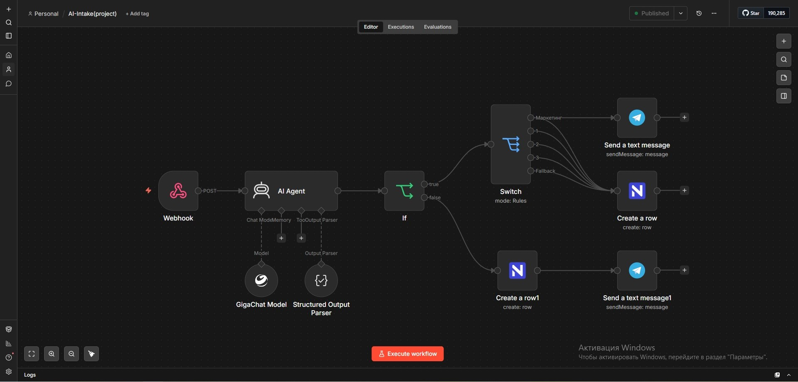

🎯 Бизнес-проблема
Компания ежедневно получает более 100 обращений через формы, email и чаты. Менеджеры тратят 3–4 часа в день на ручную сортировку вместо работы с клиентами.
- Потеря времени: ручной разбор очереди вместо активных продаж
- Потеря VIP-клиентов: срочные жалобы тонут в общем потоке
- Холодные лиды: отдел продаж получает нерелевантные запросы
- Нет аналитики: невозможно понять, какие отделы перегружены
✅ Цель решения
Создать интеллектуального ассистента, который автоматически:
- Принимает обращения через единый Webhook-эндпоинт
- Классифицирует по 5 категориям: Маркетинг, Продажи, Поддержка, Жалоба, Вопрос
- Маршрутизирует в нужный отдел через CRM (NocoDB)
- Отправляет срочные уведомления в Telegram для критичных тем
- Передаёт на ручную проверку неоднозначные случаи (Human-in-the-Loop)
⚙️ Архитектура
Инфраструктура: Self-hosted n8n, NocoDB (CRM), внешние API (GigaChat, Telegram Bot API), Nginx (Rate Limiting).
🔧 Детали реализации
🧠 Confidence Score
ИИ возвращает не только категорию, но и уверенность (0-100%). Если она низкая — включается режим ручной модерации.
📝 Structured Output
Parser гарантирует валидный JSON от модели. Никакого Markdown или «текста вперемешку» — система не ломается.
🛡️ Защита от спама
Валидация обязательных полей, дедупликация по email + хешу текста за 24 часа, лимиты запросов.
📊 Мониторинг
Алерт в Telegram, если средняя уверенность падает ниже 70% или API недоступно более 5 минут.
📊 Результат
При ставке менеджера 800 ₽/час экономия 15 часов в неделю окупает разработку за 1–2 месяца.
💡 Ценность для бизнеса
- Рост конверсии: отдел продаж работает только с «горячими» лидами
- Снижение оттока: жалобы VIP обрабатываются за 15 минут вместо суток
- Data-driven: автоматическая сегментация обращений для BI-отчётов
- Масштабируемость: рост потока обращений не требует пропорционального роста штата
🌍 Где ещё применимо
- E-commerce — маршрутизация заявок с маркетплейсов и возвратов
- Финтех — классификация обращений (кредиты, карты, мошенничество)
- Медицина — сортировка пациентов по срочности и специализации
- EdTech — распределение лидов между отделами продаж и кураторами
- HR — первичная сортировка откликов кандидатов
📦 Артефакты кейса
JSON-экспорт workflow, примеры промптов, схема базы данных NocoDB и расчёт ROI доступны по запросу для верификации production-ready архитектуры.